Writing
Essays, stories and the occasional instruction manual for the heart. Mostly about loving someone through a screen, sometimes about how it ends, always as honest as I can manage.
56 pieces, about 179k words. Written in German, published in English.
Because loving someone a little isn't a small love. It's a big disappointment that just hasn't dared to show up yet.
Loving online
What it means to love someone you can only read. Letters, distance, and the long nights in between.
11 Love I Didn't OrderImagine you're sitting in a little restaurant. You fancy a glass of wine, maybe a bit of bread, and the nice waiter with the...
Love I Didn't OrderImagine you're sitting in a little restaurant. You fancy a glass of wine, maybe a bit of bread, and the nice waiter with the...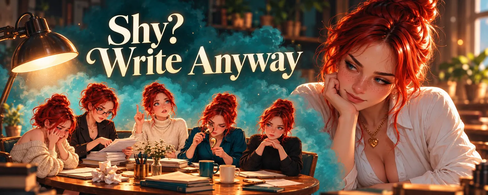
Shy? Write AnywayYour thumb hovers over the send button. Above it sits a message you've been building for a quarter of an hour now. It's not a...- The Woman Who LaughedOn online love, online marriage, and a houseplant that wrote back
- Why You Feel Empty the Second a Conversation EndsWe've talked for two hours. Someone dropped a meme in the DMs that I looked at three times, because it got better on the third....
- Relationship EP1: How It StartsIt's just past eleven, and you've written the same message four times now. The first one was too long. The second sounded like a...
- Relationship EP2: What Has to Be Said23:14. Forty minutes ago you wrote that you missed them. There's no green dot beside it, no "last seen", nothing. X is merciful...
 Relationship EP3: When It Gets HardYou wrote two hours ago. Nothing special, something about your day, and at the end you added that one word you thought about for...
Relationship EP3: When It Gets HardYou wrote two hours ago. Nothing special, something about your day, and at the end you added that one word you thought about for...- Relationship EP4: The Good Part01:40. You both meant to sleep two hours ago. You even said so three times, meaning it every time, and then somebody wrote one...
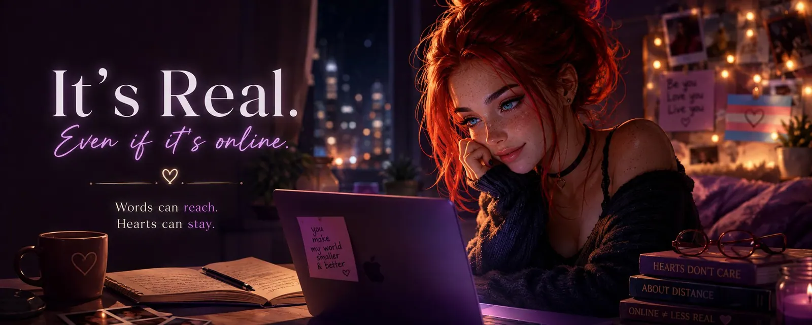
All You Have Is LettersIt's a little past one in the morning, I'm sitting alone in a dark room, and I'm laughing so hard I have to clap a hand over my...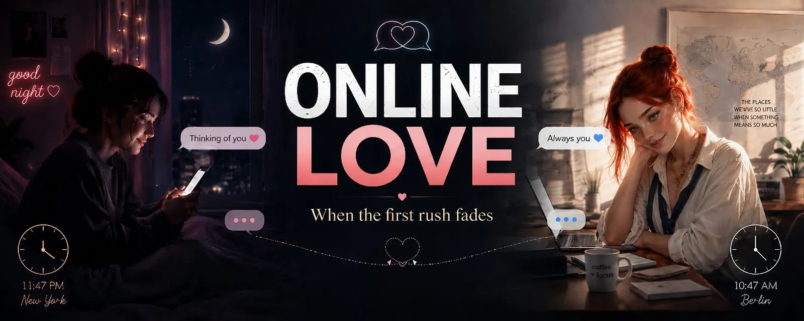
Online Love: When the First Rush FadesOnline love can feel intoxicating in the beginning. Two people meet, begin writing to each other for hours, wait eagerly for... Love Across DistanceSometimes it is a strange, yet beautiful thought: somewhere across this planet, there are people I love — and people who love me...
Love Across DistanceSometimes it is a strange, yet beautiful thought: somewhere across this planet, there are people I love — and people who love me...
Talking in text
How words land when there is no face attached, and what my head makes of them.
7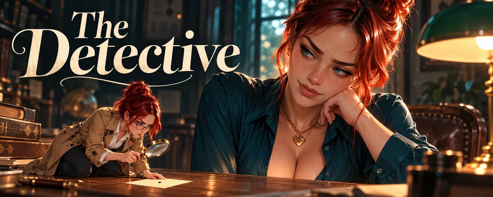
The DetectiveThis text is for everyone who has ever read a message three times to make sure it was meant to be mean. For everyone with RSD... Communication in Text, Part 1: Languages and EmotionsThis series is not meant to be scientific and it is not a guide.
Communication in Text, Part 1: Languages and EmotionsThis series is not meant to be scientific and it is not a guide. Communication in Text, Part II: ThinkingThis series is not meant to be scientific and it is not a guide.
Communication in Text, Part II: ThinkingThis series is not meant to be scientific and it is not a guide.- Communication in Text, Part III: Cultural and social differenceThis series is not meant to be scientific and it is not a guide.
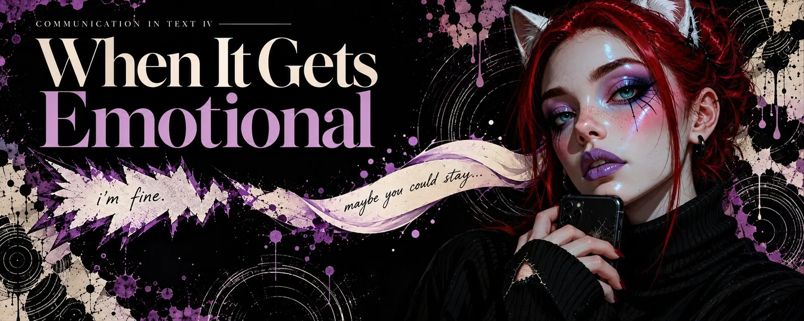
Communication in Text IV: When It Gets EmotionalSam: Hey, everything okay with you? Robin: Yeah sure, just a lot going on today. Sam: Okay. Sam: There's always a lot going on...- When You Can Hear a Pin DropRed flags for people who feel with their heart first
- My Life with RDSSince the afternoon, something has been hanging in the air between us. Not a fight, just a conversation that never quite got...
How I love
Poly, patience, and the difference between love and a timetable.
8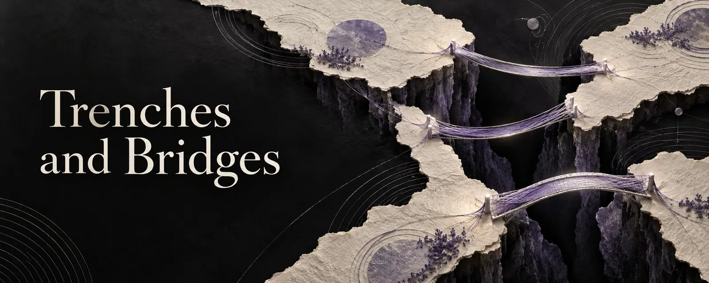
Trenches and BridgesHow manipulation works in relationships, who it hits, and how to protect yourself without starting a war.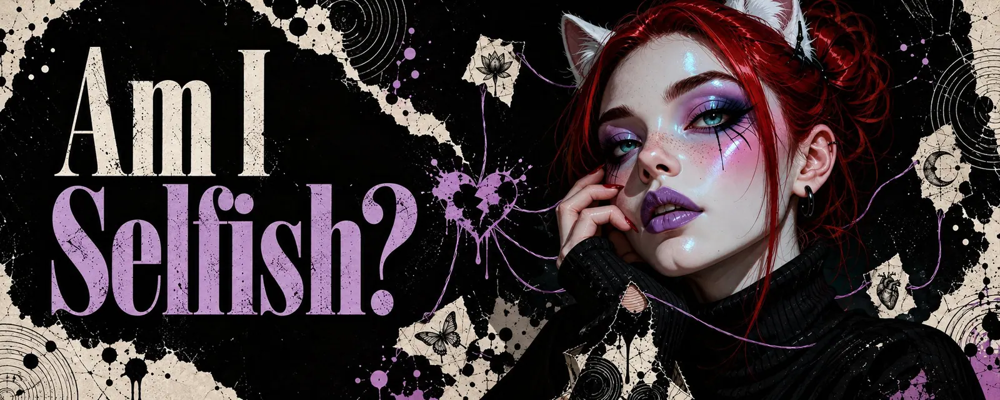
Am I Selfish?On real love, polyamory and why slowness isn't a lack of love- Love Is Not a SacrificePart 2: On the ones who give themselves away
 Love Is Not a Mandatory EventOn duty, responsibility and the pressure in online relationships
Love Is Not a Mandatory EventOn duty, responsibility and the pressure in online relationships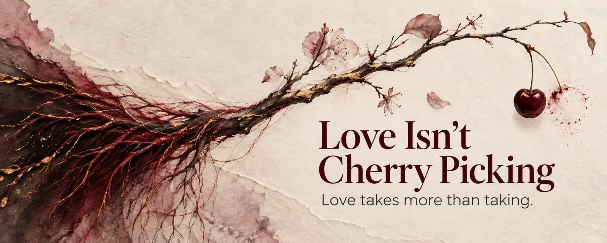
Love Isn't Cherry PickingSeven twelve in the morning, the coffee is still too hot, the phone lies next to it. I write "Good morning, I hope you slept...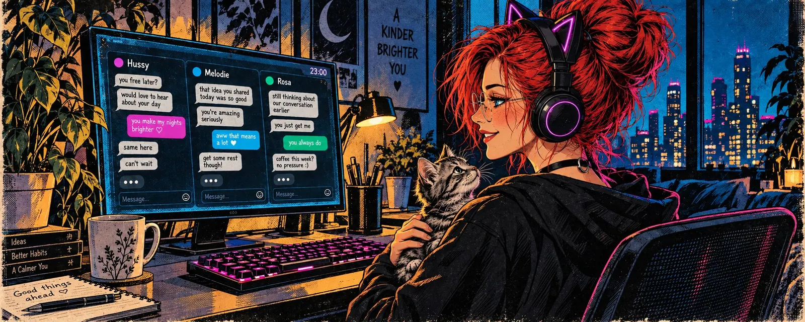
Poly love: Love Is Unlimited. I Am NotWednesday night, eleven PM. Three chat windows open. In one, someone writes that she misses me. In another, a message has been...- Why I Love the Way I LoveEveryone knows this couple. Sunday morning, a little after ten, a café with too few tables. Two lattes, two croissants, one...
- I'm Poly, not a slutI love many people. And yes, some of them are maybe you ❤️
When it ends
Endings, grief, and what you get to keep afterwards.
7- The Green DotHow to get through a breakup without losing yourself or the good parts
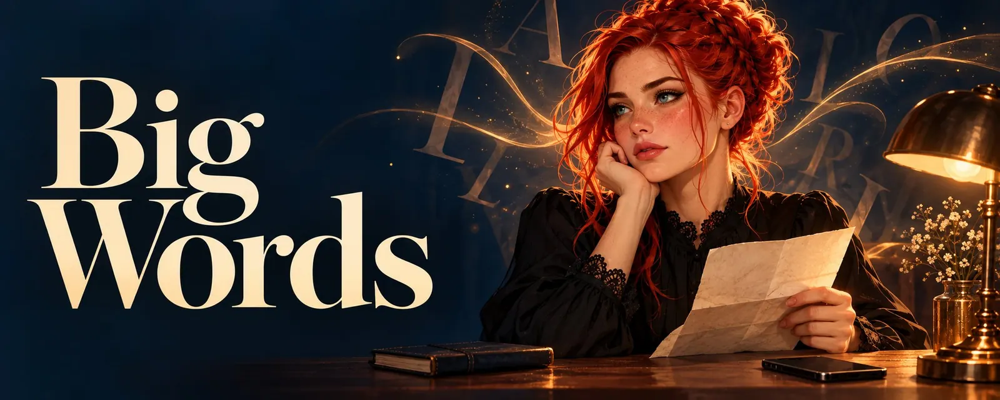
Big Words"But I told her she's the love of my life. The best of all my loves." Friendship After LoveA folder, roughly a thousand pictures. Some I made, some were sent to me, some I just saved because in that moment I thought: I...
Friendship After LoveA folder, roughly a thousand pictures. Some I made, some were sent to me, some I just saved because in that moment I thought: I...- 97 Days of LoveThat's all it takes to pull the ground out from under someone. I fell. I fell deep. These last few days have been bad, really bad.
- Love Without an AddressI'm processing a lot right now. Behind me lies a breakup without blame, and that doesn't make it any easier. When someone has...
 When Things EndMira was seventeen and knew with absolute certainty that she was going to die.
When Things EndMira was seventeen and knew with absolute certainty that she was going to die. EndingsWhen I was a child, the world seemed static to me. Not literally, obviously, but in my head things simply were, and would always...
EndingsWhen I was a child, the world seemed static to me. Not literally, obviously, but in my head things simply were, and would always...
Being trans
The mirror, the questions, and what it really costs.
5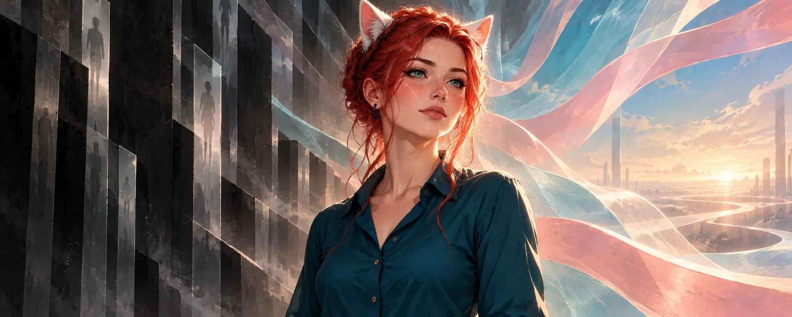
Not a Whim: What It Really Costs to Live as a Trans WomanWhen I take her hand, she starts to cry. Being Trans, Part 1: The First Time in the MirrorI still remember exactly when my body started doing things nobody had talked to me about beforehand. My sex education went...
Being Trans, Part 1: The First Time in the MirrorI still remember exactly when my body started doing things nobody had talked to me about beforehand. My sex education went...- Being Trans, Part 2: Sex, Gender and Everything In BetweenI'm quite open about who I am, and that naturally draws attention. Sometimes it's genuine curiosity, sometimes it's comments like...
- Being Trans, Part 3: It Starts in Your HeadOnce a week I run myself a bath. The water rushes, the steam slowly settles on the tiles, and at some point the whole bathroom...
 Trans People Are Not TrophiesOn the one-way streets of love — and why affection that hides isn't affection at all
Trans People Are Not TrophiesOn the one-way streets of love — and why affection that hides isn't affection at all
Who I am
The person behind all this, in her own words.
4- That's Me: Valerie in Seven VariantsI'm explaining to someone why a teaspoon of neutron star weighs more than an entire mountain. I'm really getting into it, I'm...
- Small CogsI was fourteen when the question first got me properly. Not the way you ask at eight where the dog has gone, and settle for "dog...
 I am not the victim of my pastA content warning up front: this is my story, and parts of it are not easy to read. It deals with physical and emotional violence...
I am not the victim of my pastA content warning up front: this is my story, and parts of it are not easy to read. It deals with physical and emotional violence...- Why I'm on XBack when I was still mostly making SFW images, my plan was pretty simple: grow big, collect followers, maybe one day make money...
Stories
Fiction, fairy tales, and a few things that are almost true.
11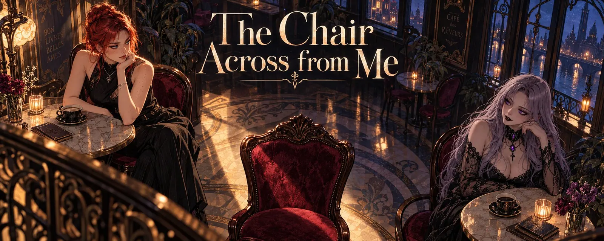
The Chair Across from MeThe café was called "Le Croissant de Lune", and nobody knew whether that meant the moon or the pastry. Madame Odile, who owned...- Zero Point Zero Zero Zero One DegreesWhen you send a spaceship to another star, the hardest part isn't the engine. It isn't the food either, although I suspect that...
 LovingU EP1: Empty CupsClaire stared at the three dots and held the cup with both hands, even though there had been nothing in it for half an hour. But...
LovingU EP1: Empty CupsClaire stared at the three dots and held the cup with both hands, even though there had been nothing in it for half an hour. But...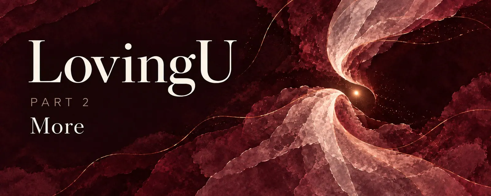
LovingU EP2: MoreThe weeks after that had no particular rhythm, and that was exactly what was particular about them. LovingU EP3: A Quarter of MeThere was a time - Claire couldn't pin it down exactly, because happy times have no edges, they don't begin and they don't end...
LovingU EP3: A Quarter of MeThere was a time - Claire couldn't pin it down exactly, because happy times have no edges, they don't begin and they don't end...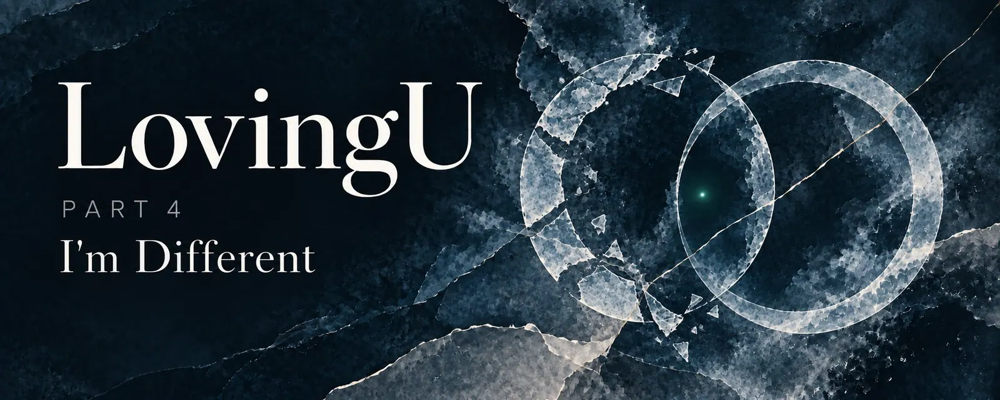
LovingU EP4: I'm DifferentThere are questions you don't ask because you're afraid of the answer. And there are questions you don't ask because you want the...- Scarlett and the Metaphysics of the HotdogA story about the internet, identity, and the question of why nobody is actually standing at your door
- A butterflyDo not open the thirteenth door. Do not talk to the wolf. Do not eat anything they offer you in the elf kingdom, no matter how...
- Valeries DaydreamNot in the evening, when Valerie decides that now she's going to think about something nice - that doesn't work, she's tried. It...
 Two Hearts, One KingdomOnce upon a time there was a Queen who had never waited to be rescued — which, as it would turn out over time, is precisely the...
Two Hearts, One KingdomOnce upon a time there was a Queen who had never waited to be rescued — which, as it would turn out over time, is precisely the...- Trapped in the 6-Inch UniverseIntroduction: When the light becomes a trap
Tools I build
The software I make so I can spend less time clicking and more time making.
3- Where I have been for a weekNothing dramatic. Just friction, everywhere.
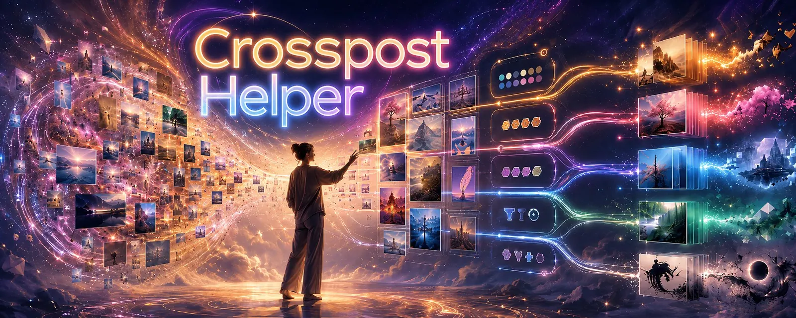
Crossposting HelperI built a desktop app because I was losing track of my own posts- SD Prompt Manager 3.4 — Connected OdyseeIt has been a while since the last release post, and SD Prompt Manager has quietly grown from "a prompt builder with a character...
After dark
Explicit stories and writing about kink. These live on X, behind a little door.
9